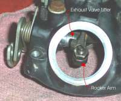
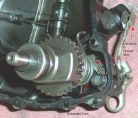
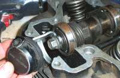
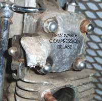
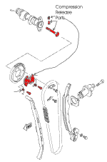
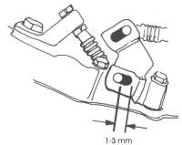
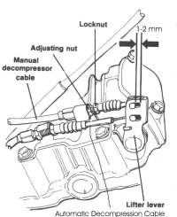
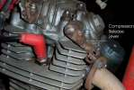

¶ A compression release allows you to ease the piston over Top-Dead-Center of the compression stroke. This allows you to kick the engine over easier. This is usually done by a lever that prevents the exhaust valve from fully seating. Then the compression pressure, of the compression stroke, leaks out through the partially open exhaust valve. This allows the piston to easily move past Top-Dead-Center and into the correct position for easy starting.
The compression release always opens the exhaust valve and not the intake valve. There is a reason for this. It's not a real good idea to vent possibly hot, and explosive gases, back into the intake track where very bad things could happen.
There are many ways to activate a compression release.
- A lever on the handlebar, connected by a cable, to the exhaust valve lifter.
- A cable connected to the exhaust valve lifter, that is automatically operated by a cam on the kickstarter.
- Both a handlebar lever and an automatic cam on the kickstarter, lift the exhaust valve, by a cable.
- A lever on the cylinder head connected directly to the exhaust valve lifter.
- A spring loaded cam or lever on the main exhaust cam.
 Exhaust Valve Lifter. |
 Kickstarter Cam Compression Release. |
 Cam Marker. |
 Removable Exhaust Cam Lifter. Yamaha 650 Twin |

To Make it easier to set the piston in the right position Yamaha even put a cam position marker on the cylinder head of their 500cc singles. Just bring the piston up on the compression stroke, pull the compression release lever and continue pushing the kickstart lever till you see the cam marker in the window on the side of the cylinder head. Then release the compression release lever and kickstart the engine.

Internal cam spring and centrifugal compression releases may or may not have adjustment. Check your shop manual.
All cable activated compression releases need about one to three millimeters of free play. Check for this play when the cables are in the relaxed position. In other words when the compression releases are not activated. If there is no play in the cables, the exhaust valve may be held open. If the engine will run at all it will run with poor engine performance and this running will cause the valve seats to burn out.
 Honda XL500 |
 Honda XL250 |

If you engine does not have a compression release it sometimes is possible to add an aftermarket one. This may require you to remove the cylinder head, machine a hole and trim some cooling fins. Take care where you put this hole. The compression release will vent hot gases if used when the engine is hot. If the hot gases hit a painted surface it will ruin the paint. There are also aftermarket compression releases that require no machining but they are bigger in size. These aftermarket compression releases are usually fitted to modified Harley-Davidson engines.

 |
 |
Copyright © 1999-2006 dansmc.com. All rights reserved.